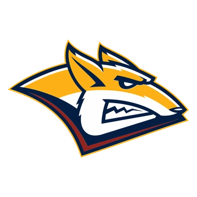
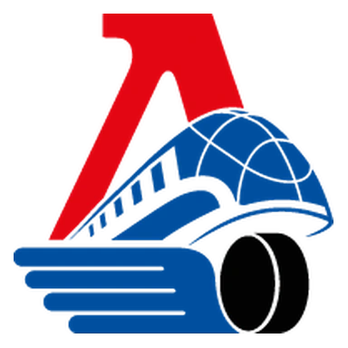

Нефтехимик — Авангард итог матча 14 ноября
Расчёт модели до матча
- 2,3 : 2,6ожидаемые голы
- 37 %тотал больше 5,5
Цифры считает модель по данным сайта, а не эксперт. Это вероятности, а не гарантия исхода. Как считает модель · словарь терминов.
Статистика матча
НефтехимикАвангард
- 29Броски в створ35
- 0 из 2Голы в большинстве1 из 5
- 0Голы в меньшинстве1
- 4Штрафные минуты28
- 2Удаления5
- 32Выигранные вбрасывания32
- 59 %Владение шайбой41 %
- 80Входы в зону атаки63
Удаления по минутам 7
- 2-й период
- Хайруллин Тимур №29Подножка2 мин
- Адамчук Кирилл №77Блокировка2 мин
- Волков Александр В. №83Подножка2 мин
- 3-й период
- Афанасьев Егор Ю. №11Подножка2 мин
- Бикмуллин Рафаэль №10Толчок клюшкой2 мин
- Лажуа Максим №58Задержка соперника2 мин
- Пакетт Седрик №13Дисциплинарный штраф до конца матча20 мин
Данные лиги.
- ТурнирКХЛ
Коротко о матче
Нефтехимик — Авангард 1:5: гости победили. Модель до игры считала самым вероятным исходом победу гостей (43 %) — так и получилось.
По форме команды были близки: в пяти последних матчах у обеих по 3 победы. Слабое место — оборона: Нефтехимик — в среднем 3,6 пропущенной шайбы за игру в этих пяти матчах.
До этого команды встречались 24 декабря 2025 года: Авангард — Нефтехимик 4:3 в овертайме.
Форма: последние матчи
Нефтехимик 3 победы из 5
- В3:1
 В2:1
В2:1
П1:8
П1:5- В4:3
Авангард 3 победы из 5
- П1:2
 В2:1
В2:1- В4:3
- П0:4
- В4:3
Личные встречи
- Авангард4:3ОТНефтехимик
- Нефтехимик0:3Авангард
- Нефтехимик6:5Авангард
- Авангард2:1Нефтехимик
- Нефтехимик1:5Авангард
- Нефтехимик3:4ОТАвангард
Положение в таблице
| Команда | Место | И | В | П | Голы | Очки |
|---|---|---|---|---|---|---|
| Нефтехимик | 2 | 26 | 14 | 12 | 71:71 | 31 |
| 3 | 24 | 13 | 11 | 50:58 | 28 |
Куда дальше
Все прогнозы дня — в TelegramПрогнозы на КХЛ, НХЛ и футбол, итоги каждое утро. Бесплатно.
Открыть каналМатериалы носят информационный характер и не гарантируют результат. Реклама букмекеров на сайте не размещается. Сайт только для совершеннолетних (18+).